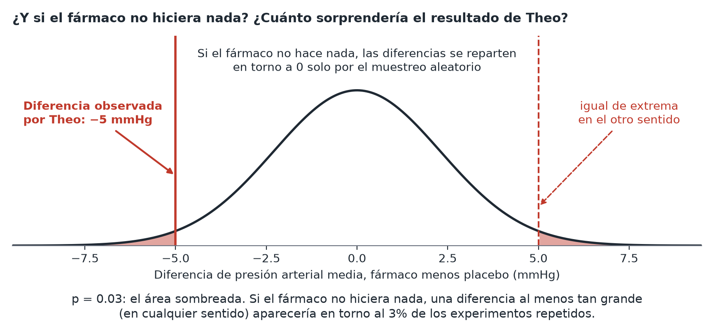

Valores p y significación
En pocas palabras: un valor p es la probabilidad de ver un resultado al menos así de extremo si de verdad no hubiera ningún efecto. No es la probabilidad de que tu hipótesis sea cierta.
Recuerda que las pruebas habituales que se usan para obtener un valor p suelen poder formularse como un modelo de regresión (o MLG), que normalmente es un enfoque más informativo (véase Pruebas como regresiones).
Un ejemplo paso a paso
Theo compara la presión arterial entre un grupo con el fármaco y un grupo con placebo y obtiene p = 0.03. Esto significa: si el fármaco de verdad no hiciera nada, habría un 3% de probabilidad de ver una diferencia así de grande (o mayor) solo por la variación aleatoria del muestreo. Como un 3% es bastante improbable, Theo lo toma como evidencia en contra de que "el fármaco no hace nada".

Lo que no significa:
- No es "hay un 97% de probabilidad de que el fármaco funcione". (Eso confunde el valor p con algo que no es: la probabilidad de la hipótesis, no de los datos.)
- No mide lo grande que es el efecto: un efecto diminuto e irrelevante puede producir un valor p pequeño con suficientes datos (véase Tamaño del efecto).
- Un valor p justo por encima de 0.05 no significa "no hay efecto": puede significar simplemente que el estudio no tenía potencia suficiente para detectar un efecto real más pequeño.
Dónde es apropiado un valor p (y dónde no)
La garantía de falsos positivos que promete un valor p solo se cumple para una única hipótesis decidida antes de mirar los datos, idealmente surgida de un experimento controlado y bien diseñado (véase Exploratorio vs. confirmatorio). Fuera de ese escenario —análisis exploratorio, muestras observacionales de conveniencia, una comparación elegida después de ver los datos— el valor p no tiene el significado que se le suele suponer, así que es mejor prescindir de él que presentarlo; se trata de usar la herramienta adecuada para los datos que tienes, no de fiarte más o menos del número.
Incluso en ese mejor de los casos, un valor p es una herramienta limitada: reducir un resultado a "significativo" o "no" tira por la borda lo grande que es el efecto y lo incierta que es la estimación. Presentar el tamaño del efecto con un intervalo de confianza saca más partido a los mismos datos que la decisión de aceptar o rechazar; véase la sección siguiente.
Otro matiz, algo más radical, es el que sostiene Andrew Gelman, que defiende que quizá aprendemos más de no rechazar una hipótesis que de rechazarla. Si damos por supuesto que no existen efectos exactamente nulos, algo plausible en muchos campos, alcanzar la significación estadística es solo cuestión de tamaño muestral, mientras que no rechazar una hipótesis puede enseñarte que algo falla: que tus mediciones son imprecisas, que tu diseño es erróneo o que el efecto varía mucho según el contexto. Todo ello es información valiosa.
Nivel de significación (alfa) y la convención del 0.05
Antes de ejecutar una prueba, eliges un umbral (alfa) —por convención 0.05— por debajo del cual llamarás a un resultado "estadísticamente significativo". Es una convención, no una ley de la naturaleza; no hay una diferencia relevante entre 0.05 y 0.06 como punto de corte. Tratarlo como una frontera rígida entre "cierto" y "no cierto" es un malentendido frecuente.
Intervalos de confianza: a menudo más útiles que un único valor p
Un intervalo de confianza (IC) da un rango de valores plausibles para el efecto real, no solo un veredicto de sí o no. "Los portadores tenían un colesterol LDL 0.4 mmol/L más alto que los no portadores (IC del 95%: 0.1 a 0.7)" te dice el tamaño probable del efecto y cuán incierta es esa estimación: es estrictamente más informativo que "p = 0.03". Siempre que sea posible, presenta tanto el tamaño del efecto como su IC, y no solo el valor p.
La conclusión
Un valor p solo está bien calibrado para una única hipótesis decidida antes de ver los datos, idealmente procedente de un experimento bien diseñado; fuera de ese escenario, no lo calcules ni lo cites. Incluso dentro de él, no dejes que sea la última palabra: presenta como titular la estimación del tamaño del efecto y su intervalo de confianza, y trata el veredicto de significativo/no significativo como contexto adicional opcional, no como sustituto de ellos.